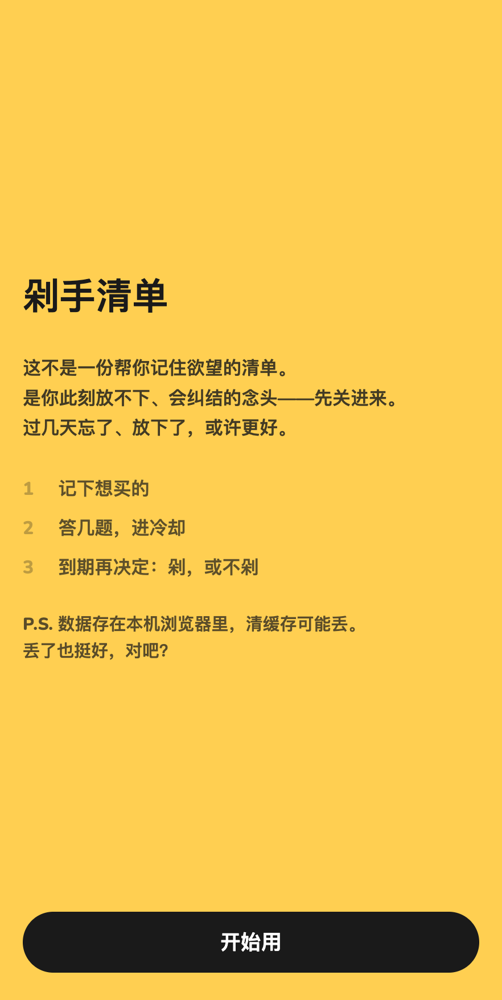
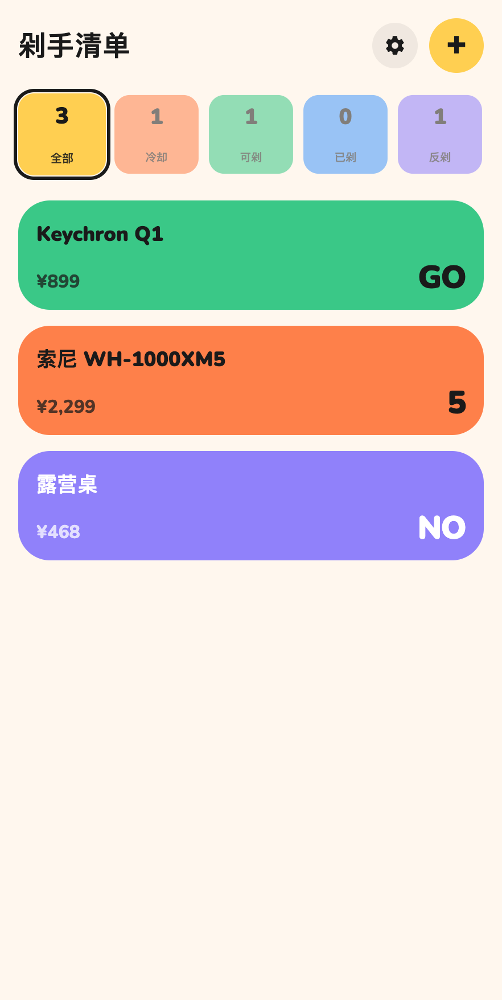
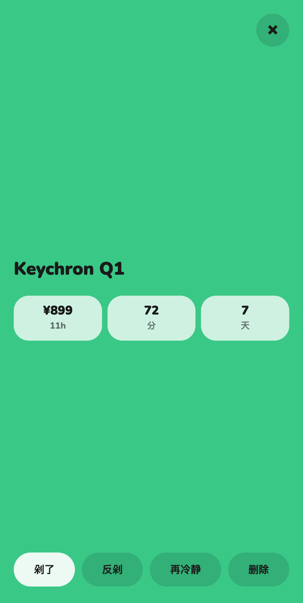
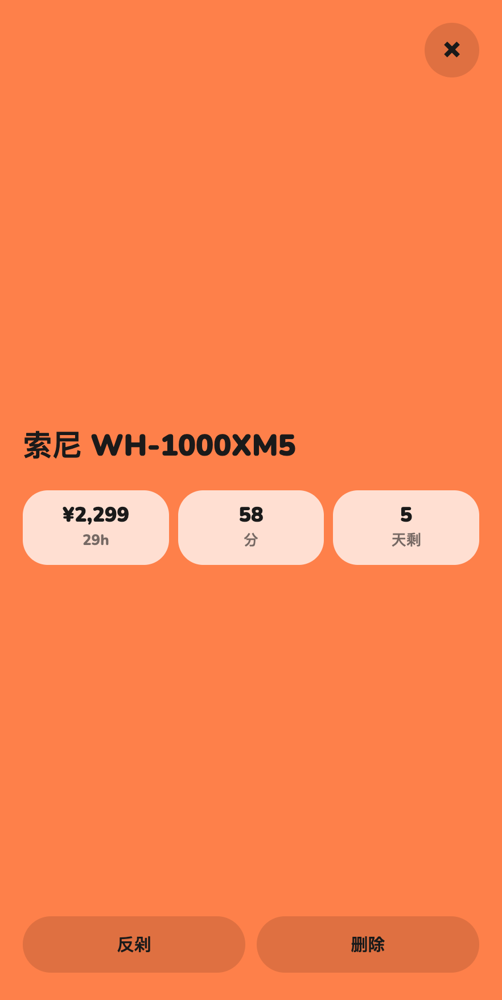
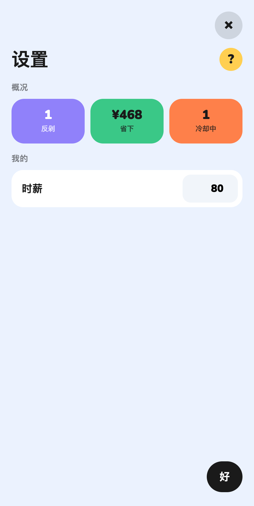
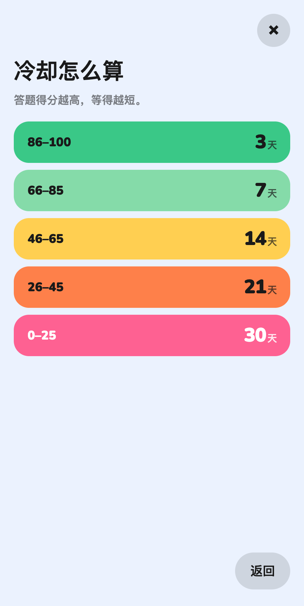

剁手清单
一页纸案例 · 从念头到可分享的小工具
一句话
想剁手前先冻几天。答几题定冷却时长，到期再决定买或不买。纯前端 PWA，数据在本机浏览器。
链接
在线试用
https://bryce2026.github.io/dushou-list/
GitHub
https://github.com/Bryce2026/dushou-list
Word 版
剁手清单-一页纸案例.docx
想法从哪来
最初是一份临时的 Mac 桌面小工具（用苹果的 Swift 语言写的）：把冲动购物先关进清单，用冷却期打断「现在就下单」。后面想让更多人随手打开试试，又不想走 App Store，就把同一套逻辑做成网页 / PWA。
产品状态很简单：冷却中 → 可剁 → 已剁 / 反剁。冷却天数由五道题得分映射到 3 / 7 / 14 / 21 / 30 天；时薪只用来换算「这东西要干多少小时」，藏在设置里。
怎么做的
- HTML + CSS + 原生 JS，localStorage 存清单和设置
- manifest + Service Worker，可「添加到主屏幕」
- 无账号、无后端；清缓存会丢数据，引导页写明了
- 色块卡片区分状态；列表按可剁 → 冷却 → 已剁 → 反剁排序
过程里改了什么
先有 Mac 桌面原型当材料，再重做成网页。文案从偏说明的版本收到引导三步 + 一句 P.S.；时薪和冷却对照表都进设置，主列表只留清单。手机上处理过安全区和对话框底部被挡的问题。
发布时 Actions 受 token 权限限制，改推 gh-pages 挂 GitHub Pages。仓库公开，数据仍是各自浏览器本地的。
发布与布置
仓库 Bryce2026/dushou-list，Pages 指向 gh-pages。本机在 demo/ 起静态服务即可调试。安卓 Chrome 可安装应用；iOS Safari 用「添加到主屏幕」。
界面一览





